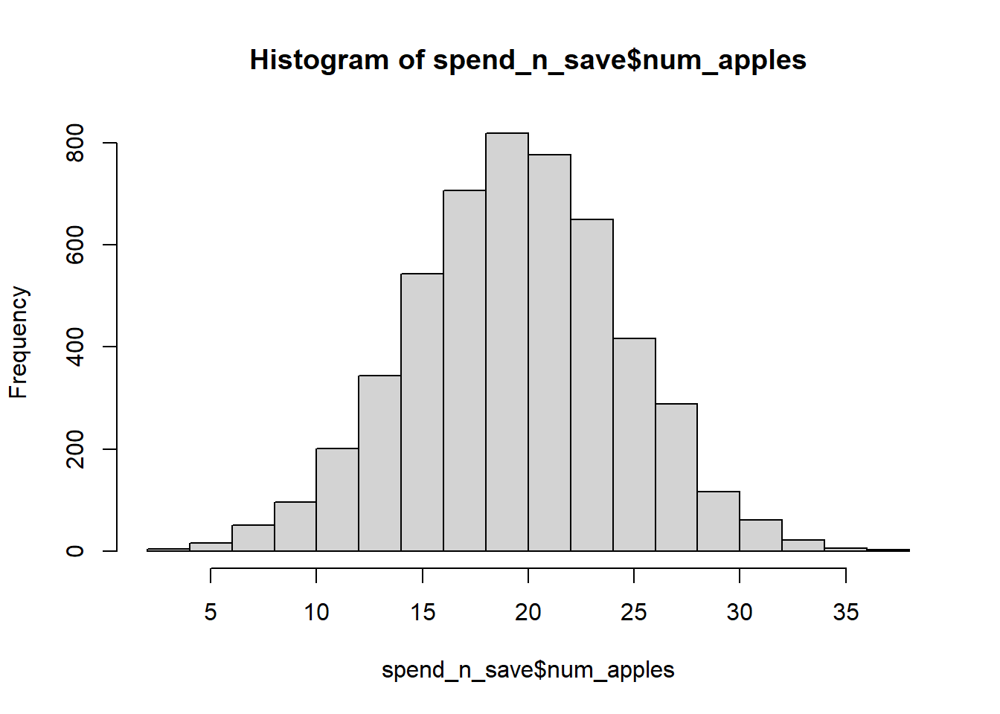
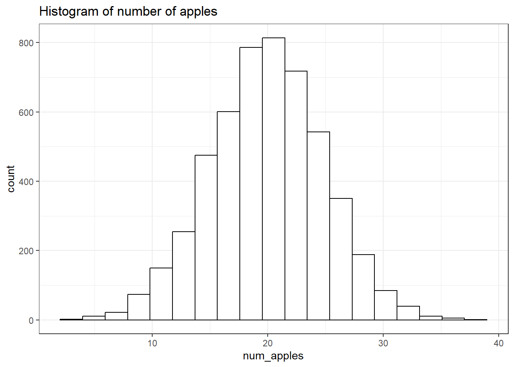
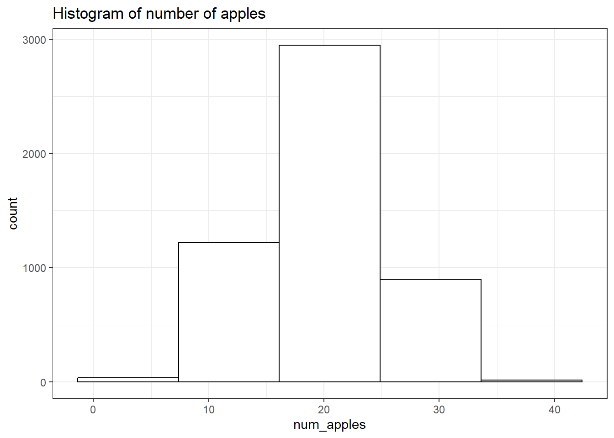
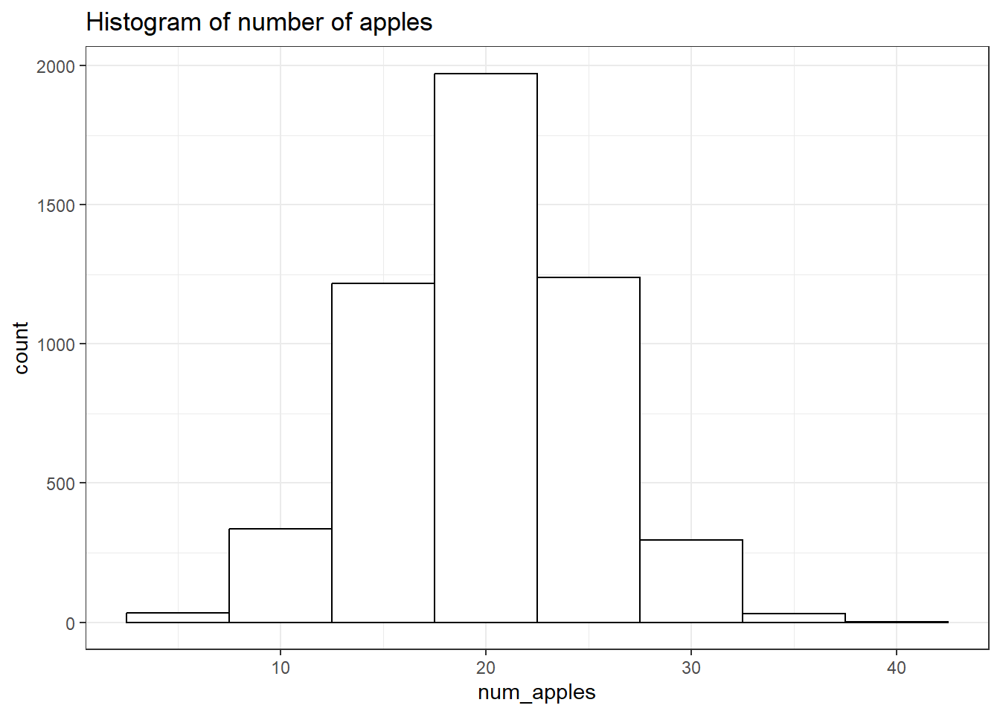
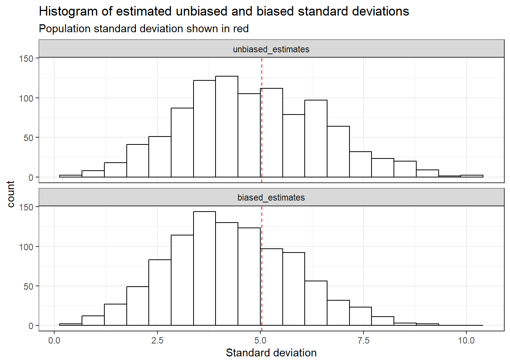

# If you need to install the packages, simply uncomment the lines below
# install.packages("tidyverse")
# install.packages("janitor")
# install.packages("rstatix")
# install.packages("gt")This is the 2nd post in the Tidy StatQuest series:
The StatQuest Illustrated Guide to Statistics
| Chapter | Blog post | StatQuest notebook | Tidy notebook |
|---|---|---|---|
| 01 - Fundamental Concepts in Statistics | link | link | link |
| 02 - Visualizing Data and Calculating Probabilities with Histograms | link | link |
The content of this post is also available as a Jupyter notebook, click on the link below to open it:
Set up
We’ll be using four packages:
| {tidyverse} | import and manipulate data |
| {janitor} | clean data |
| {rstatix} | calculate statistics |
| {gt} | generate nice tables |
# Load packages
library(tidyverse)
library(janitor)
library(rstatix)
library(gt)We’ll be using the {ggplot2} package to create figures. We set the theme to theme_bw():
theme_set(theme_bw())Load the data and create a histogram
The data is available on the Github repository. We download it using the {readr} package:
file_url <- "https://raw.githubusercontent.com/StatQuest/sigs/refs/heads/main/chapter_01/spend_n_save.txt"
spend_n_save <- read_tsv(file_url) |>
# clean_names() default settings transform column names using snake case
clean_names() |>
# the 'id' variable is categorical, we transform it into a factor
mutate(id = factor(id))Print out the first rows:
head(spend_n_save) |> gt()| id | num_apples |
|---|---|
| 1 | 27 |
| 2 | 17 |
| 3 | 22 |
| 4 | 23 |
| 5 | 22 |
| 6 | 19 |
When using the base R hist() functions, 19 bins are created.
p <- hist(spend_n_save$num_apples)
length(p$breaks)[1] 19We use the {ggplot2} package to create a simple histogram
ggplot(data = spend_n_save) +
geom_histogram(aes(x = num_apples),
color = "black", fill = "white", bins = 19) +
labs(title = "Histogram of number of apples")
Save the plot
To export the plot to a .png, we use the ggsave() function, which takes 5 arguments:
filename: the name of the file where the plot will be exportedplot: the plot we wish to save (defaults to the last plot)dpi: plot resolution in pixelswidth: width of the plot in pixelsheight: height of the plot in pixels
We first save the plot as an R object, then save this object.
p <- ggplot(data = spend_n_save) +
geom_histogram(aes(x = num_apples),
color = "black", fill = "white", bins = 19) +
labs(title = "Histogram of number of apples")
ggsave(filename = "hist.png", plot = p,
dpi = 320, width = 12, height = 6)Change the bin sizes
With geom_histogram(), two arguments can be used adjust the number of bins:
bins: sets the number of bins
ggplot(data = spend_n_save) +
geom_histogram(aes(x = num_apples),
color = "black", fill = "white",
bins = 5) +
labs(title = "Histogram of number of apples")
bin_width: sets the width of each bin
ggplot(data = spend_n_save) +
geom_histogram(aes(x = num_apples),
color = "black", fill = "white",
binwidth = 5) +
labs(title = "Histogram of number of apples")
Calculating probabilities from the data
To calculate the probability of walking into a Spend-n-Savestore that sells at least 32 apples:
we filter the table to take the rows in which the
num_applesvariable has a value of at least 32using
nrow()we count the number of rows matching the filter
num_stores <- spend_n_save |>
filter(num_apples >= 32) |>
nrow()
# print out the result
num_stores[1] 55To calculate the probability, we divide num_stores by the total number or rows in the table, and round off the result:
round(num_stores / nrow(spend_n_save), 2)[1] 0.01Draw histograms of the estimated standard deviations we calculated in Chapter 1
We conduct the same experiment as in the 1st post: simulate 1,000 draws of 5 random values and calculate the biased and unbiased standard deviations.
We use the replicate() function, which takes two arguments:
nfor the number of replicatesexprfor the code describing the experiment
We adapt the code from the first post to calculate the sum of squared residuals (ssr):
set.seed(42)
ssr <- replicate(
n = 1000,
expr = {
spend_n_save |>
slice_sample(n = 5) |>
summarise(ssr = sum((num_apples - mean(num_apples))^2)) |>
pull()
}
)We calculate the biased (square root of \(SSR\) divided by \(n\)) and unbiased (square root of \(SSR\) divided by \(n-1\)) standard deviations:
sd_biased <- sqrt(ssr/ 5)
sd_unbiased <- sqrt(ssr / 4)head(sd_biased)[1] 2.481935 4.127953 1.788854 2.925748 3.611094 3.200000head(sd_unbiased)[1] 2.774887 4.615192 2.000000 3.271085 4.037326 3.577709We print out the averages:
tibble(
sd_unbiased_mean = round(mean(sd_unbiased), 1),
sd_biased_mean = round(mean(sd_biased), 1)
) |>
gt()| sd_unbiased_mean | sd_biased_mean |
|---|---|
| 4.8 | 4.3 |
We calculate the mean, variance and standard deviation for the population of stores:
pop_stats <- spend_n_save |>
mutate(squared_error = (num_apples - mean(num_apples))^2) |>
summarise(pop_mean = mean(num_apples),
pop_var = mean(squared_error),
pop_sd = sqrt(pop_var))
pop_stats |> gt()| pop_mean | pop_var | pop_sd |
|---|---|---|
| 19.92309 | 25.38507 | 5.03836 |
To draw the histograms with the population standard deviation on top:
We first create a
tibble(the{tidyverse}’s dataframe) with two columns: one containing the unbiased standard deviations, the other containing the biased standard deviationsWe add a row id (
rowid_to_column())We pivot the table into a long format using
pivot_longer(), with two arguments:the rows to pivot (in this case, all columns except
rowid)the name the column containing the pivoted column names will take (
names_to)
We want the histograms to be in the following order: unbiased then biased. To achieve this we transform the
sdcolumn into a factor, with levels determined by the order of appearance of the classes, using the{forcats}package functionfct_inorder()We then initiate the plot with
ggplot()We create a histogram for both distributions
We add a vertical line showing the population standard deviation
Finally, we separate it into two histograms, based on the unbiased/biased classes using
facet_wrap(). To align the histograms vertically, we use thencolargument.
tibble(
unbiased_estimates = sd_unbiased,
biased_estimates = sd_biased
) |>
rowid_to_column() |>
pivot_longer(cols = -rowid,
names_to = "sd") |>
mutate(sd = fct_inorder(sd)) |>
ggplot() +
geom_histogram(aes(x = value),
color = "black", fill = "white",
bins = 19) +
geom_vline(xintercept = pop_stats$pop_sd,
col = "red", linetype = "dashed") +
facet_wrap(~sd, ncol= 1) +
labs(
title = "Histogram of estimated unbiased and biased standard deviations",
subtitle = "Population standard deviation shown in red",
x = "Standard deviation")